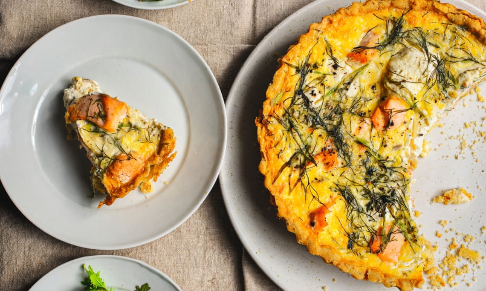

Salmon tart

Sample photo - Photo by Jonathan Lovekin/The Observer
Description
A salmon and spinach tart with a pre-made puff-pastry
Ingredients
- 1/2 of a standard roll of pre-made puff-pastry
- 400ml of 12-18% fat sour cream
- 1 piece of salmon (fresh of smoked)
- 2-3 eggs
- 1 cup of fresh spinach leaves
- grated cheese
- salt, pepper, nutmeg
Steps
- Preheat the oven
- Paste the puff-pastry into the round tart form, to create the bottom and side layer of the tart.
- Pre-bake it for 10 min at 240 Celsius degrees
- If the salmon is fresh: bake / fry it
- Blanch the spinach
- In na bowl mix sour cream with grated cheese and spinach. Mix together with eggs. Add spices
- Put the salmon into the pre-baked puff-pastry
- Add the content of the bowl over the salmon
- Bake for ~15 min at 200 Celsius degrees
- Serve while hot, or in a room temperature